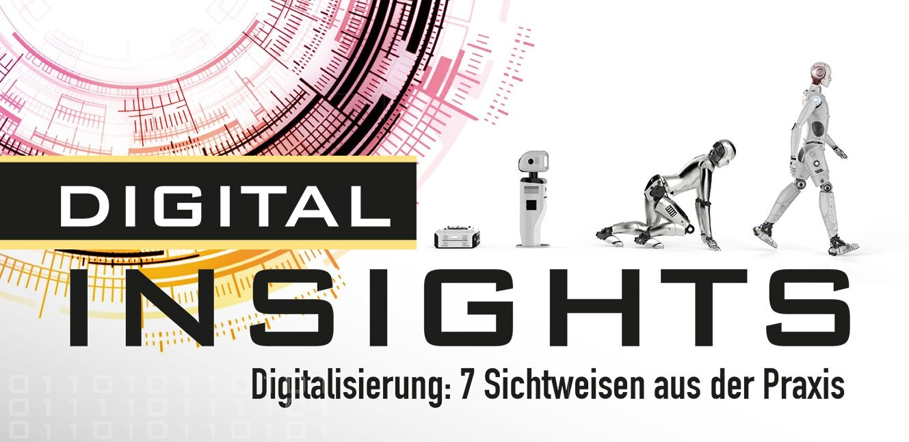
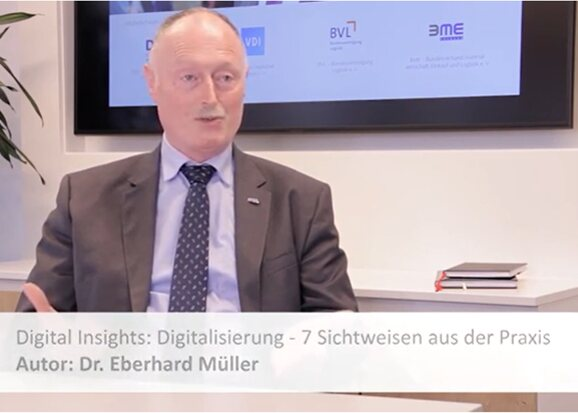
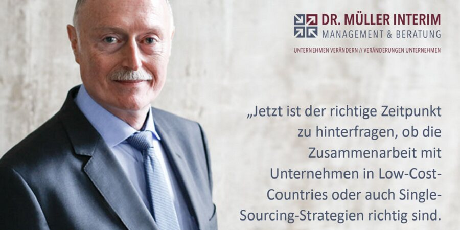

Buch, Podcast und Fachbeiträge.
Gedanken zu Digitalisierung, Geschäftsmodellen und Wertschöpfungsnetzen.

Digital Insights. Digitalisierung: 7 Sichtweisen aus der Praxis.
Wie der digitale Wandel in Unternehmen gelingen und gewinnbringend genutzt werden kann, schildern die sieben Autoren facettenreich und verständlich. Dr.-Ing. Eberhard Müller ist einer von ihnen.
Best Practice Verlag · ISBN 978-3-96800-000-8
Weitergedacht.
Die Beiträge liegen im Entwurf noch auf der Originalseite und öffnen sich in einem neuen Fenster.
Wettbewerbsfähig durch Digitalisierung mit Kundenfokus und Wertbeitrag, Plattformökonomie und Ökosystemen
Viele Unternehmen wissen, dass große, i.d.R. kundengetriebene Veränderungen im Unternehmen und beim Geschäftsmodell anstehen. Die notwendigen Anpassungen müssen definiert und professionell im Rahmen …
Beitrag auf der Originalseite ↗Collaborative Management
Nach wie vor gibt es in den Unternehmen das sogenannte „Insel- oder Silodenken“ z.B. die Abteilung X, die Landesgesellschaft Y, die Funktion Z. Diese isolierten Sichtweisen werden in Zukunft das …
Beitrag auf der Originalseite ↗Das Delta- Modell
Unternehmenserfolg steht im Einklang mit Kundenzufriedenheit. Wer den Kundennutzen über Wertbeiträge, auch mit weiteren Wertschöpfungspartnern, deutlich erhöht und seine Kunden versteht, erreicht …
Beitrag auf der Originalseite ↗
Digitalisierung
Die Bedeutung der Digitalisierung für alle Menschen und Lebensbereiche wird an Beispielen erläutert. Eine nicht mehr umkehrbare Reise in die Zukunft hat begonnen und es geht darum, die damit …
Beitrag auf der Originalseite ↗
Globalisierung vs. Regionalisierung: was lehren uns Corona, Klimaschutz und Gesellschaft?
Schon vor Corona durfte man fragen, ob die Zusammenarbeit mit Unternehmen in Low-Cost-Countries oder auch Single-Sourcing-Strategien am Ende der günstigste Weg sind. Jetzt ist der richtige Zeitpunkt, …
Beitrag auf der Originalseite ↗Geschäftsmodell update: Digitalisierung jetzt
Jede Krise ist immer auch Auslöser für Veränderung. Wer sein Geschäftsmodell jetzt überprüft, nachjustiert oder vielleicht sogar neue Wege einschlägt, der verschafft sich Vorsprung. Die …
Beitrag auf der Originalseite ↗Lernen wir uns kennen.
Sie möchten mich besser kennenlernen. Gerne stehe ich Ihnen für einen Gesprächstermin zur Verfügung.
Gesprächstermin anfragenHeinrich-Delp-Str. 194
64297 Darmstadt